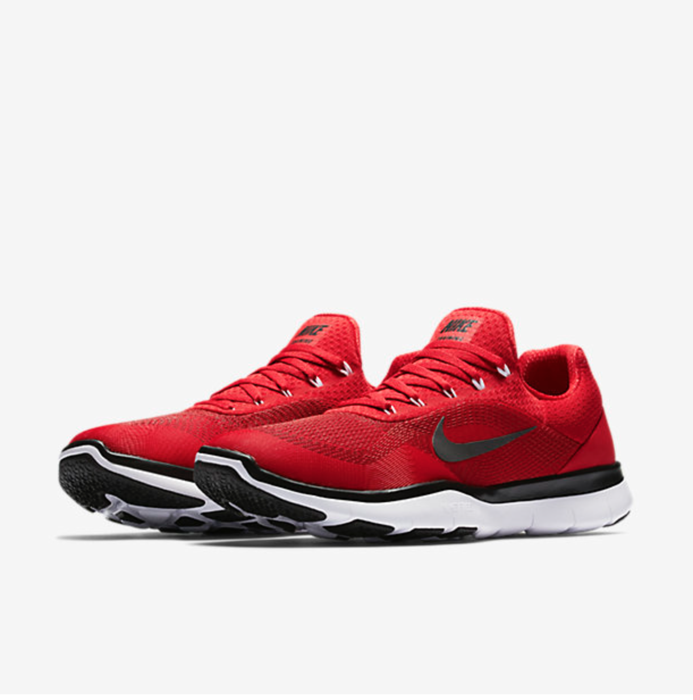
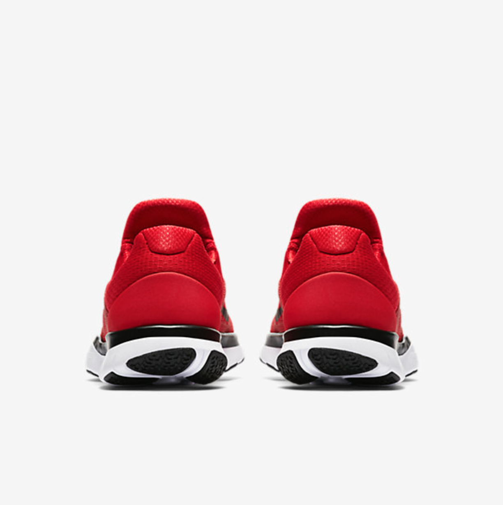
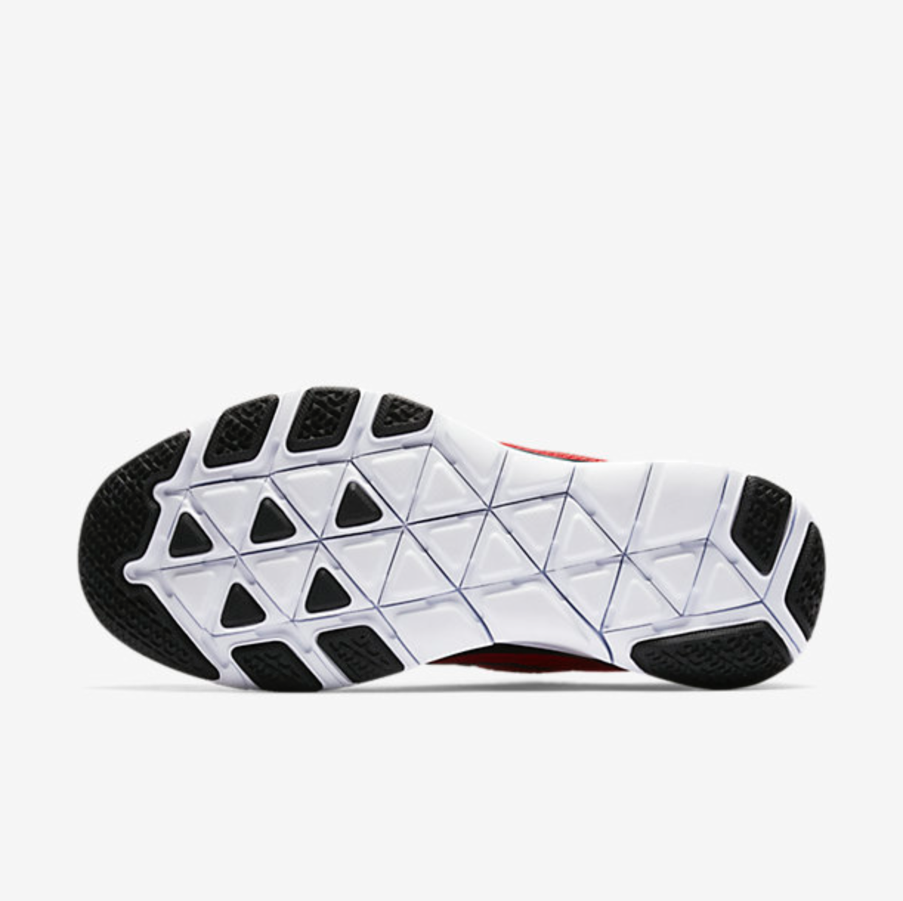
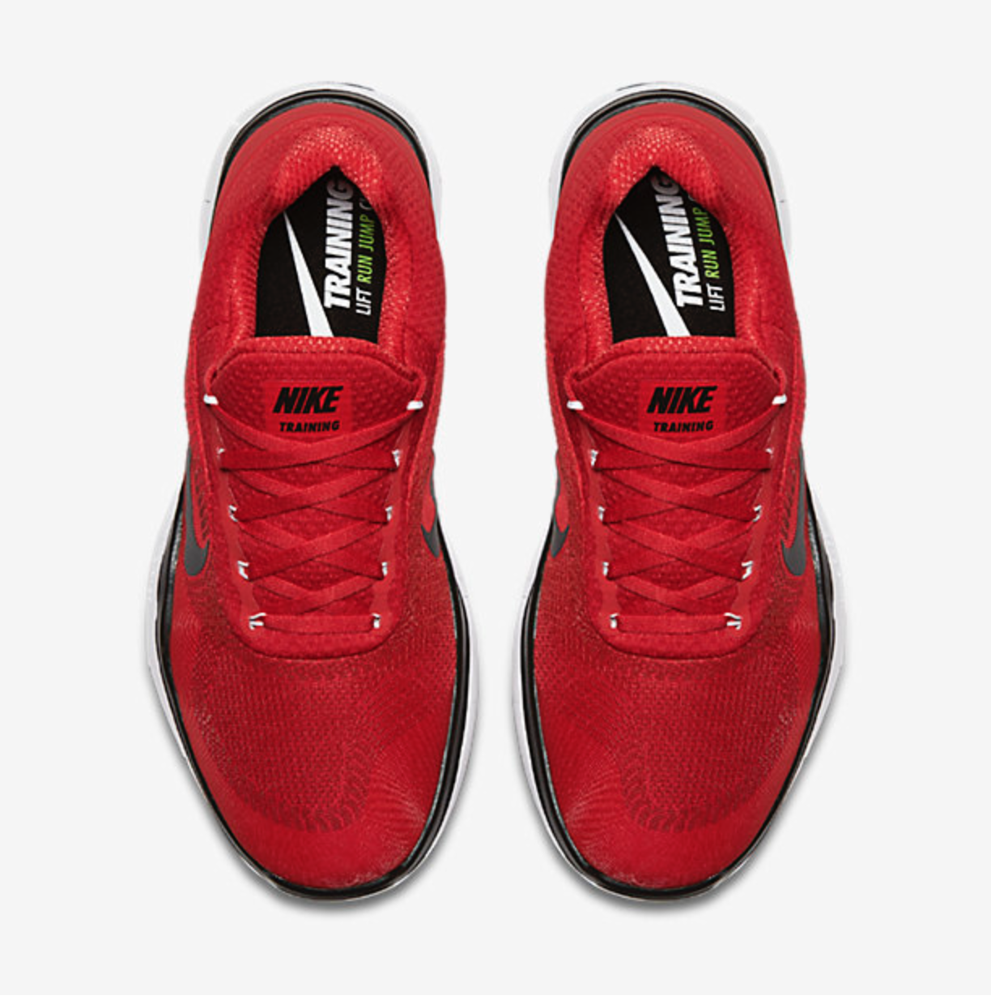

NIKE FREE TRAINER V7
MEN'S TRAINING SHOE
PRODUCT DESCRIPTION
The ultralight Nike Free Trainer V7 Men's Training Shoe delivers the stability and versatility you need for high-intensity workouts and adds the incredible flexibility of a Nike Free sole.With each step, the updated Nike Free sole expands
and contracts in all directions, following the natural motion of your foot. A 3D-printing-enhanced upper provides targeted areas of durability, breathability and stability right where you need them. A half-sleeve design with Flywire
cables provide a locked-in fit during intense workouts while still providing easy on and off.
|  |
|
|
|  |
|  |
|  |
BENEFITS
After learning that Stanford athletes had been training barefoot, three of Nike's most innovative and creative employees
set out to develop a shoe that felt natural and weightless, similar to bare feet. The team spent four years studying the
biomechanics of runners' feet in motion. The results yielded a profound understanding of the foot's natural landing angle,
pressure and toe position, allowing Nike designers to build an unconventional and flexible running shoe from the inside out.
INGREDIENTS
Heel counter helps improve stability
One-piece foam sole is comfortable and extremely lightweight
Foam insole follows the curve of your foot
Rubber sections at the toe and heel provide durable traction
Weight: 9.75 ounces/277 grams (men's size 10)
Offset: 5mm